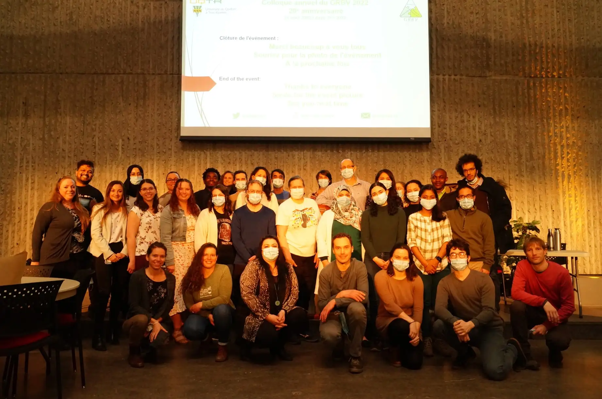

Enregistrez pour
recevoir les alertes des événements du CPICS.
2022-11-17
Les Journées du Centre SÈVE 2022 ont été la preuve du grand interêt
du Centre SÈVE en promouvoir la cooperation et le partenariat avec
chercheur·e·s internationaux. Pendant la Réunion Conjointe Centre
SÈVE-SFR
NorVége (France), des professeurs du Québec (Université de
Sherbrooke, Agriculture et Agroalimentaire Canada, Université du Québec
à Trois-Rivières, Université Laval et McGill University) ont présenté
leurs travaux à côté des professeurs de la France (UniLaSalle-Rouen,
Université de Caen Normandie et Université de Rouen Normandie). En plus,
l’heure de réseautage à présenté les étudiant·e·s avec la possibilité de
participer aux Écoles d’été au Maroc (2023) et au Cameroun (2024).
Au Symposium étudiant, 24 étudiant·e·s ont présenté leurs projets de
maîtrise ou doctorat dans les sessions: (A) Interactions microbiennes et
résistance, (B) Sciences du végetal, (C) Productions agricoles et
environment. Félicitations aux gagnant·e·s des prix de meilleures
présentations!
Session A: Interactions microbiennes et
résistance
Premier place: Maude
Pomerleau (Université de Sherbrooke)
Deuxième
place: Rosaelle Perreault (Université de Sherbrooke)
Session B: Sciences du végetal
Premier place: Souleimen Jmii (Université du Québec à
Montréal)
Deuxième place: Ingrid Berenice
Sanchez Carrillo (Université du Québec à Trois-Rivières)
Session C: Productions agricoles et
environment
Premier place: Jessica
Nicksy (McGill University)
Deuxième place: Felix
L’Heureux Bilodeau (Université Laval)
Voyez les photos de cet incroyable recontre scientifique aux réseaux
sociaux du Centre
SÈVE
2022-10-06
Félicitations à notre Ex-Présidente, Dre Claire
Letanneur, pour avoir été dans le trois personnalités des la
compétition Forces AVENIR.
Cliquez
ici pour voir son interview
2022-09-07
Félicitations au nouveau Dr. Andrew Diamond, qui a fini son doctorat
en biologie cellulaire et moléculaire sous la direction de la Dre.
Isabel Desgagné-Penix et Dr. Simon Barbabé à l’UQTR. Et encore
félicitation pour avoir son article publié la veille de sa soutenance.
Bravo!
Nous vous souhaitons le meilleur pour vos projets futurs !
Publication: Is there a
spice missing in the recipe? The intra-cellular localization of vanillin
biosynthesis needs more investigations
2022-09-05
Félicitations à notre ex-présidente Dre. Claire
Letanneur pour avoir commencé un nouveau stage postdoctorale à Ulysse Biotech.
Nous félicitons aussi Amal
Jaballi pour avoir fini sa maitrise avec le Dr. Tagnon
Missihoun, et Dr. Seydou Ka,
qui a fait son doctorat avec la Dre. Isabel Desgagné-Penix, pour avoir
été promu à analyste et chercheur à CCrest laboratories.
Nous vous souhaitons le meilleur pour vos projets futurs !
2022-08-31
Felicitations au groupe de recherche de la Dre. Isabel Desgagné-Penix
de l’UQTR, spécialement Marie-Pierre Girard et Vahid Karimzadegan, pour
leur publication dans la revue scientifique Molecules.
Publication: Chemical Synthesis and
Biological Activities of Amaryllidaceae Alkaloid Norbelladine
Derivatives and Precursors
2022-07-25
Felicitations au groupe de recherche de la Dre. Isabel Desgagné-Penix
de l’UQTR, Manoj Koirala, Vahid Karimzadegan, Nuwan Sameera Liyanage et
Natacha Mérindol, pour leur publication dans la revue scientifique Biomolecules.
Publication: Biotechnological Approaches
to Optimize the Production of Amaryllidaceae Alkaloids
2022-05-04
Félicitations à notre ex-vice président Networking, Romaric
Armel Mouafo Tchinda pour avoir obtenu un poste de post-doctorat à
l’University of Florida au laboratoire de la Dre. Karen
Garrett (qui était notre invitée dans la What’s up Conference de l’annéee
passée).
Nous vous souhaitons le meilleur pour vos projets futurs !
2022-04-26
Félicitations au Groupe
de recherche en biologie végétale (GRBV) pour son 20e anniversaire.
Aussi, félicitations aux présentateurs et aux organisateurs du colloque
annuel du GRBV.

2022-04-7
La collaboration internationale entre le groupe de recherche de la
Dre. Isabel Desgagné-Penix (Dre. Natacha Mérindol et Marie-Pierre
Girard), le Dr. Lionel Berthoux (UQTR) et le Dipartimento di
Biologie de l’Università di Napoli Federico II de
l’Italie, a produit une publication montrant les propriétés médicinaux
des alkaloïdes de la plante Pancratium maritimum. Bravo!
Publication: Cytotoxicity and Antiviral
Properties of Alkaloids Isolated from Pancratium maritimum
2022-05-04
Félicitations à notre ex-vice président Networking, Romaric
Armel Mouafo Tchinda pour avoir obtenu un poste de post-doctorat à
l’University of Florida au laboratoire de la Dre. Karen
Garrett (qui était notre invitée dans la What’s up Conference de l’annéee
passée).
Nous vous souhaitons le meilleur pour vos projets futurs !
2022-04-26
Félicitations au Groupe
de recherche en biologie végétale (GRBV) pour son 20e anniversaire.
Aussi, félicitations aux présentateurs et aux organisateurs du colloque
annuel du GRBV.
2022-04-12
Félicitations au Centre SÈVE membre Dr. Hugo
Germain et aux membres de son équipe, Théo
Devèze, Claire
Letanneur, Nikunj
Sharma et Snehi Gazal
pour la réussite de leur expédition Indienne sur la biodiversité du
Cannabis à l’automne 2021!
Leurs travaux ont été publiés dans NEO
UQTR.
Lisez le récit de leur voyage et des travaux scientifiques réalisés en
Inde avec des images envoûtantes des chaînes himalayennes avec du
Cannabis.
2022-03-10
Nouvelle publication du Dr. Tagnon
Missihoun et son étudiante à la maitrise Amal
Jaballi de l’UQTR.
Publication: The
phytohormone abscisic acid modulates protein carbonylation in
Arabidopsis thaliana
Aussi, le candidat au doctorat Charles
Roussin-Léveillée du laboratoire du Dr. Peter
Moffet a publié sa recherche dans la revue Cells Host & Microbe.
Voici leur publication:
Evolutionarily
conserved bacterial effectors hijack abscisic acid signaling to induce
an aqueous environment in the apoplast
Félicitations !
2022-02-10
Nouvelle publication de notre ancienne Vice-Présidente aux
Communications, Marianne
Bessette.
Publication: Population
genetic structure of the carrot weevil (Listronotus oregonensis)
in North America
Félicitations !
2022-01-03
Nouvelle publication de une des chercheuses du Centre Séve, Dre Isabel
Desgagné-Penix, et ses étudiants et étudiants Laurence Tousignant,
Aracely
Maribel Diaz Garza, Bharat Bhusan
Majhi, Sarah-Eve
Gélinas, en collaboration avec la chercheuse postdoctorale Aparna
Singh, de l’University of New Brunswick.
Publication: Transcriptome analysis
of Leucojum aestivum and identification of genes involved in
norbelladine biosynthesis
Félicitations !